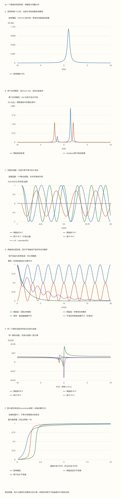

本页目录
- 先问峰从哪里来，再问它能活多久
- 1. 同样两条峰，可以有不同的物理含义
- 2. 固定约定：retarded 是因果条件，不是占据概率
- 3. Lehmann 表示：每一条线都能追溯到一对多体态
- 4. 宽带单峰：什么时候宽度确实给出指数时间？
- 5. 封闭两能级：两条实极点，完全没有内禀宽度
- 6. 从同一 Hamiltonian 算时间：回返不是衰减
- 7. Hubbard 原子：用四个态展开多体谱
- 8. 占据、Green 零点和谱矩：三个不同的检查
- 9. Dyson 方程：自能既能来自相互作用，也能来自消元
- 10. 因果解析性与准粒子近似：哪些条件不能省？
- 11. 把图接回实验：测到的强度并不总是 A
- 12. 八个逐步核验：用算出来的量纠正直觉
凝聚态 III · Green 函数：谱峰、谱权重与寿命
前置：二次量子化、BCS 的谱权重与占据、复数、二阶矩阵和 Fourier 变换。目标：从一个可解 Hamiltonian 计算谱，再判断哪些峰宽能解释成寿命。
建议分三次学习：第 1–4 节建立字典，第 5–8 节算两个封闭模型，第 9–12 节检查近似与测量。先读图例中的模型名，再比较曲线。
先问峰从哪里来，再问它能活多久
1. 同样两条峰，可以有不同的物理含义
让一个电子从轨道 \(a\) 出发，耦合到另一个轨道 \(b\)。即使完全没有耗散，测量 \(a\) 通道的能谱也可能出现两条线。电子的振幅在两个轨道之间往返，系统没有“把粒子消耗掉”。
再考虑一个局域轨道：放入上自旋电子时，若下自旋已经在场，需要额外付出排斥能 \(U\)。同一个上自旋通道也会出现两种添加/移除能量。这是相互作用产生的谱结构，但有限封闭原子仍没有连续谱所代表的不可逆衰减。
最后，若一个轨道耦合到很大的连续环境，局部振幅在适当时间范围内可以近似指数衰减，对应一条 Lorentzian 峰。峰数、谱质量、峰宽回答不同问题。本页用这三个模型比较，避免从“看起来更宽”直接跳到“寿命更短”。
所有实验能量以任意固定单位 \(E_0\) 表示，时间以 \(\hbar/E_0\) 表示。界面整数滑块除以 \(100\) 才是无量纲参数。例如 \(\Gamma/E_0=0.30\) 并不指定某种材料的 \(0.30\) meV；若自行选 \(E_0=1\) meV，时间单位才是约 \(0.6582\) ps。
2. 固定约定：retarded 是因果条件，不是占据概率
对一个规范归一化的费米模式 \(c\)，取巨正则生成元 \(K=H-\mu N\)，并用 \(K\) 演化算符。这样单粒子能量相对于化学势计量：
第一项记录“先添加，再移除”；第二项记录“先移除，再添加”。它们共同组成反对易函数。一般热态中的 \(G^R\) 因而不是某个已经准备好的单电子波函数。\(|i\hbar G^R(t)|^2\) 也不能无条件当成电子占据。
本页使用能量 Fourier 约定
因此 \(G^R(E)\) 的单位是能量倒数。定义
有些资料把谱函数定义为 \(-2\operatorname{Im}G^R\)；那套约定会把积分中的 \(2\pi\) 移到别处。比较公式前先核对定义。这里用 \(F(t)=i\hbar G^R(t)\) 画无量纲时间曲线，\(t=0\) 采用右极限 \(F(0^+)=1\)；负时间另画零线，不用一条斜线跨越因果跳跃。取 \(\theta(0)=1/2\) 的分布约定不会改变 Fourier 结果。
3. Lehmann 表示：每一条线都能追溯到一对多体态
设 \(K|m\rangle=K_m|m\rangle\)，热概率为 \(p_m=e^{-\beta K_m}/\mathcal Z\)，\(\beta=1/(k_BT)\)。在反对易函数两项中分别插入完备集。令 \(|n\rangle\) 比 \(|m\rangle\) 多一个粒子，则
分母告诉我们跃迁能量；矩阵元决定该通道能否看到这条线；两种热概率分别提供添加和移除的权重。取虚部得到
把每个 \(\delta\) 积掉，再用完备性把中间态求和还原成算符乘积：
这里的正性与单位和规则针对规范费米子单粒子对角谱。异常配对谱、非对角矩阵元，或者玻色子对易响应的谱，不应直接套用同一句正性判断。相关约定与推导可核对 Fjærestad 的 Green 函数讲义第 2.2、2.5、2.6 节；下文将把一般求和落实为四个态上的具体算术。
4. 宽带单峰：什么时候宽度确实给出指数时间？
先独立定义一个常数自能的宽带模型：
半高点是 \(e_a\pm\Gamma\)，所以全宽半高为 \(2\Gamma\)。闭合 Fourier 积分的下半平面，得到
在一个明确允许把这项当作局部一粒子生存振幅的 Markov 衰减模型中，
相差的 \(2\) 来自振幅取模平方，不是两种能量单位。一般相互作用热态的占据演化还要知道 lesser 相关函数或动力学方程；不能只凭 retarded 峰宽给所有“人口寿命”赋值。Illinois PHYS561 的原始课程讲义分别列出 retarded、greater 和 lesser 对象，适合核对这些区别。
全轴面积为 \(1\)，有限窗 \([-W,W]\) 的面积却是
默认 \(e_a/E_0=1,\Gamma/E_0=0.3,W/E_0=10\) 时，窗内约为 \(0.98071457\)，余下的约 \(1.93\%\) 在图外。把图上曲线重新缩放到面积 \(1\) 会藏掉这部分信息。
\(\Gamma=0\) 时必须回到 \(\delta(E-e_a)\)：此时没有有限峰高，也没有有限衰减时间。实验改画谱线质量 \(1\)，相关时标留空并标明 \(\infty\)。宽带模型的 Lorentzian 尾部还使普通一阶矩不绝对收敛、二阶矩发散；它不是任意高能、任意短时都精确的有限带宽系统。
5. 封闭两能级：两条实极点，完全没有内禀宽度
在单粒子基底 \((|a\rangle,|b\rangle)\) 中，设
因为 \((h-\bar e I)^2=R^2I\)，无需猜本征矢相位便可写出能量和投影：
\(a\) 通道只取投影的 \(aa\) 元素，因此
两谱线质量相加为 \(1\)。若 \(v=0\) 且 \(e_a\ne e_b\)，其中一个 \(a\) 通道权重为 \(0\)：Hamiltonian 有那个本征能量，并不表示每个实验通道都看得到。若同时 \(R=0\)，两个能量简并；此时直接使用整个简并子空间投影 \(I\)，\(a\) 通道只有一条质量为 \(1\) 的线，不计算 \(d/R\)。
默认 \((e_a,e_b,v)/E_0=(1,-1,1)\) 给 \(E_\pm/E_0=\pm\sqrt2\)，权重约 \(0.14644661\) 与 \(0.85355339\)。相互作用尚未出现，单纯轨道杂化已经重新分配谱权重。
6. 从同一 Hamiltonian 算时间：回返不是衰减
从 \(|a\rangle\) 出发，矩阵指数可以直接展开为
因此
两概率在每个时刻相加为 \(1\)。共振 \(e_a=e_b\) 且 \(v\ne0\) 时可完全转移；失谐时最大转移概率只有 \(v^2/R^2\)。概率周期为 \(\pi\hbar/R\)，而复振幅还携带整体相位；不要只看实部穿过零就断言粒子消失。
这里 \(a(t)=Z_-e^{-iE_-t/\hbar}+Z_+e^{-iE_+t/\hbar}\) 同时是 \(F_{aa}(t>0)\)，因为这个二次型模型的一粒子传播有明确的态准备。这给了模平方一个合法的生存概率解释。后面的热态原子反对易函数不具备相同解释。
为了看清谱线，实验用 \(z=E+i\eta\) 显示
这是给每条 \(\delta\) 线做 Lorentzian 平滑。在 Fourier 空间它会乘 \(e^{-\eta|t|/\hbar}\)。真实 \(h\) 并没有改变；图中把 \(e^{-2\eta t/\hbar}|a(t)|^2\) 特别标成“平滑后的模平方”，与真实回返概率并列。只调 \(\eta\)，真实回返不能改变。具体仪器未必是 Lorentzian，这里只是一个解析可核验的分辨率示例。
7. Hubbard 原子：用四个态展开多体谱
取一个没有空间跃迁的原子轨道，局域裸能量设为 \(0\)：
完整基底和能量是
| 编号 | 态 | \(K\) |
|---|---|---|
| 0 | 空态 | \(0\) |
| 1 | 仅上自旋 | \(-\mu\) |
| 2 | 仅下自旋 | \(-\mu\) |
| 3 | 双占据 | \(U-2\mu\) |
为了避免低温指数溢出，计算时先减去最小能量：\(p_j=e^{-(K_j-K_{\min})/(k_BT)}/\sum_\ell e^{-(K_\ell-K_{\min})/(k_BT)}\)。这不改变任何概率。在 \(T=0\)，实验取所有简并基态等权的热极限；若实际准备了某个特定纯态，则应换成那份密度矩阵。
上自旋产生算符只有两条允许跃迁：\(0\to1\) 的能量为 \(-\mu\)，\(2\to3\) 的能量为 \(U-\mu\)。令 \(\bar n=\langle n_\downarrow\rangle=p_2+p_3\)，则
第一条谱权重为 \(p_0+p_1=1-\bar n\)，第二条为 \(p_2+p_3=\bar n\)；其中的添加权重分别是 \(p_0,p_2\)，移除权重分别是 \(p_1,p_3\)。这正是一般 Lehmann 求和的一次完整展开。
在默认 \(U/E_0=4,\mu/E_0=2,k_BT/E_0=0.5\) 时，\(\bar n=1/2\)，两条线位于 \(\pm2E_0\)，各有质量 \(1/2\)。双占据概率却只有约 \(0.00899310\)。看到负能谱线质量 \(1/2\)，不等于“双占据概率为 \(1/2\)”。
8. 占据、Green 零点和谱矩：三个不同的检查
热平衡中，费米因子 \(f(E)=1/(e^{E/(k_BT)}+1)\) 把总谱拆成已占据和未占据部分。对原子逐条计算，有
这与 \(p_1+p_3\) 相同；实验把两种算法并列显示。在 \(T=0,E=0\) 的热极限使用 \(f(0)=1/2\)，必须同时使用相应简并混合态，不能一边选纯态一边套热权重。
原子时间函数为
默认半填充时它是 \(\cos(Ut/(2\hbar))\)。其模平方从 \(1\) 振荡到 \(0\)，但平衡态 \(\langle n_\uparrow\rangle=1/2\) 始终不变。这是“反对易 Green 函数平方就是占据”的具体反例。
再把原子的两个分式合并：
若 \(U>0\) 且 \(0<\bar n<1\)，两极点之间有一个Green 函数零点 \(z=U(1-\bar n)-\mu\)。它是复响应相消的结果，不要求负谱权重。若 \(\bar n=0\) 或 \(1\)，相应因子可约掉，不应保留一个假的零点。
最后检查未平滑谱的矩 \(M_j=\int dE\,E^jA(E)\)。两能级给
原子给
这些是理想离散谱的矩。给它们加 Lorentzian 显示尾部后，高阶普通矩不再具有同样的收敛性质。不要拿有限显示窗截断后的二阶积分，冒充精确的 \(M_2\)。
9. Dyson 方程：自能既能来自相互作用，也能来自消元
把两能级的 \(b\) 分量消去，\(a\) 通道的 resolvent 是
这项自能已经存在于无相互作用的轨道投影中。它说明“被省略的自由度怎样反作用于所保留通道”，并不自动等于多体散射率。若 \(v\ne0\)，一个非零权重实极点满足
与谱投影的 \(aa\) 元素完全相同。实验同时列出这两种留数计算。解耦暗态和简并情况单独取极限，避免对不存在的可见极点机械求导。
对原子，以 \(G_{0,\uparrow}(z)=1/(z+\mu)\) 为裸参考，代入 Dyson 方程可得
第一项是静态 Hartree 位移，第二项含有频率依赖。\(U=0\) 或 \(\bar n=0,1\) 时，动态项直接消失，不做 \(0/0\) 运算。实验在同一个 \(z=E+i\eta\) 上取其实部和虚部；由此出现的平滑负虚部不能被当成原子真实寿命。
10. 因果解析性与准粒子近似：哪些条件不能省？
对本页有正谱权重的模型，
在上半平面解析。对实轴边界，实部是主值积分
两部分来自同一个函数，不能任意拼接。自能若含常数高频极限，应先减掉该常数再写通常的色散积分；原子的 \(U\bar n\) 正是一个例子。宽带常数虚自能是特定无限带宽理想化，不能把它当成具有正确全部高频矩的有限带宽自能。
对真正有窄共振的连续系统，若在峰附近自能变化足够缓慢、与其他峰和阈值分开，可以在
附近线性展开。忽略高阶项和虚部导数的影响，定义
得到局部近似
这需要正且可解释的谱权重，以及 \(\Gamma_k\) 小于自能、背景和相邻结构变化的能标。靠近阈值、多个峰重叠、强烈能量依赖或没有分离的共振时，不能把拟合参数直接称为准粒子留数和寿命。稳定孤立实极点的正留数可以解释为谱质量；宽共振中简单实导数公式只是近似。
遗漏的权重可能在其他离散峰，也可能在连续背景，不总是“非相干连续部分”。有限封闭系统先有实离散谱；连续谱和合适的极限才允许宽共振与近似不可逆时间行为。总系统能量守恒与所观察通道的振幅减小不矛盾。
11. 把图接回实验：测到的强度并不总是 A
在常用的光电子谱近似中，移除电子信号含有矩阵元和 \(f(E)A(k,E)\)，随后还受能量、动量分辨率与背景影响。隧穿电导要结合电极态密度、隧穿矩阵元和热卷积；上一课的 BCS 实验已把理想谱与热卷积分开。中子散射主要连接相应的自旋或密度关联，不能直接把本页单粒子 \(A\) 的和规则套过去。输运也往往需要电流关联和顶角信息，不能只把某个单粒子峰宽倒数当作电阻率。
因此，“峰高下降一半”至少要继续检查：峰的积分质量是否变化、图窗是否收全、分辨率是否改变、是否有未分辨的第二条线，以及所用响应函数是否正确。谱质量小与寿命短没有必然等价关系。
原子例子是理解 Hubbard 谱结构的起点，但没有空间传播与晶格热力学极限，不能由两条原子线宣布已经完成 Mott 转变的证明。向研究课程迁移时，应依次加入跃迁、动量依赖、连续谱和自洽近似，再检查正性、和规则、解析性与收敛。
无脚本对照：六份记录保留8项参数、两能级谱投影、原子四态与两条Lehmann跃迁、复Green函数与自能、211个时间点和100个有限窗积分。Γ仅属于宽带模型；η只平滑封闭谱，真实动力学不含η。

| 预设 | Γ/E0 | η/E0 | 宽带窗内质量 | 两能级平滑谱窗内质量 | 原子平滑谱窗内质量 | 原子每自旋占据 | 逐谱线fA总和 |
|---|---|---|---|---|---|---|---|
| default | 0.3 | 0.1 | 0.98071457 | 0.99350412 | 0.99336881 | 0.5 | 0.5 |
| resonant | 0.3 | 0.1 | 0.98090713 | 0.99356972 | 0.99336881 | 0.5 | 0.5 |
| sharp | 0 | 0.01 | 1 | 0.99935039 | 0.99933685 | 0.5 | 0.5 |
| blurred | 0.3 | 1 | 0.98071457 | 0.93527611 | 0.9339519 | 0.5 | 0.5 |
| atomic-degenerate | 0.3 | 0.1 | 0.98071457 | 0.99350412 | 0.99322992 | 0.33333333 | 0.33333333 |
| empty | 0.3 | 0.1 | 0.98071457 | 0.99350412 | 0.99336881 | 0 | 0 |
下载六份完整记录。默认图窗是[-10E0,10E0]。Γ=0改用δ线质量；落在积分窗边时取半质量。T=0采用简并基态等权热极限。高阶谱矩表对应未平滑离散谱，不能从Lorentzian显示尾部作无穷区间积分得到。
12. 八个逐步核验：用算出来的量纠正直觉
练习 1：默认宽带峰的半高、时标与图外质量
取 \(e_a/E_0=1,\Gamma/E_0=0.3\)。峰顶是 \(E_0A(e_a)=1/(0.3\pi)\simeq1.06103295\)；在 \(E/E_0=0.7,1.3\) 达到半高，FWHM 为 \(0.6E_0\)。
振幅时标为 \((10/3)\hbar/E_0\)；在指定生存模型下，平方时标为 \((5/3)\hbar/E_0\)。若选 \(E_0=1\) meV，则约为 \(2.194\) ps 与 \(1.097\) ps。
窗 \([-10E_0,10E_0]\) 的质量由两项 arctan 之差给出 \(0.98071457\)；全轴仍为 \(1\)。减去窗内质量得到 \(0.01928543\)，这部分不是数值归一化失败，而是模型的窗外尾部。
练习 2：默认两能级为什么有两个不同强度的峰？
\(h/E_0=\left(\begin{smallmatrix}1&1\\1&-1\end{smallmatrix}\right)\)，所以 \(\bar e=0,d=E_0,R=\sqrt2E_0\)。能量为 \(\pm\sqrt2E_0\)，而 \(Z_\pm=(1\pm1/\sqrt2)/2\)。
先验算 \(Z_-+Z_+=1\)。再算一阶矩：
二阶矩为 \((Z_-+Z_+)2E_0^2=2E_0^2=e_a^2+v^2\)。能量、权重和两个矩必须同时一致，不能只把两个峰画在正确位置。
练习 3：半个回返周期时，粒子是否已经消失？
默认模型的概率周期为 \(T_{\rm ret}=\pi\hbar/(\sqrt2E_0)\)。在 \(t=T_{\rm ret}/2\)，正弦平方为 \(1\)，所以
它只转移了一半；总概率仍为 \(1\)。把失谐调为零且保留 \(v\ne0\)，最大转移才变成 \(1\)。在整个回返周期后 \(P_{a\to a}=1\)，无法用一个单调指数寿命描述这条曲线。
短时间还可展开 \(P_{a\to a}=1-v^2t^2/\hbar^2+O(t^4)\)，起初没有线性损失项。宽带指数 \(e^{-2\Gamma t/\hbar}\) 却有线性项；两种模型的极短时行为本来就不同。
练习 4：只调 eta，哪条“衰减”是显示造成的？
固定默认两能级，只把 \(\eta/E_0\) 从 \(0.1\) 调到 \(1\)。Hamiltonian、\(E_\pm\)、\(Z_\pm\)、真实 \(P_{a\to a}\) 与 \(P_{a\to b}\) 全部不变。
显示谱的每条 Lorentzian 却由 FWHM \(0.2E_0\) 变成 \(2E_0\)。其 Fourier 平滑函数的平方多出 \(e^{-2\eta t/\hbar}\)，所以看起来快速消失。它描述显示卷积的作用，不是实验在此封闭 Hamiltonian 中发现了新的耗散项。
还可检查窗外质量：\(\eta\) 变大，有限窗漏掉的尾部增多，但全轴质量仍为 \(1\)。
练习 5：半填充原子的两个半权重峰怎样给出占据？
\(U=4E_0,\mu=2E_0,k_BT=0.5E_0\) 时，移位 Boltzmann 权重为 \((e^{-4},1,1,e^{-4})\)。归一化后
因此每自旋占据为 \(p_1+p_3=1/2\)。两谱线在 \(\pm2E_0\)，各有质量 \(1/2\)；对应 Fermi 因子约 \(0.98201379,0.01798621\)。逐项相乘再相加，仍为 \(1/2\)。
此时 \(F_\uparrow(t)=\cos(2E_0t/\hbar)\)，在 \(t=\pi\hbar/(4E_0)\) 为零。平衡占据仍为 \(1/2\)；这直接反驳把其模平方当作电子占据的读法。
练习 6：零温简并点为什么不是随便取一个占据？
取 \(U>0,\mu=0,T=0\)。空态与两个单占据态能量都为 \(0\)，双占据能量为 \(U\)。按本实验规定的热极限，前三态各有概率 \(1/3\)，故 \(\bar n=1/3\)。
上自旋谱在 \(E=0\) 的质量为 \(2/3\)，在 \(E=U\) 的质量为 \(1/3\)。配合 \(f(0)=1/2,f(U)=0\)，得到
若另行准备了纯上自旋态，占据为 \(1\)，那已经换了密度矩阵；不能继续使用等权热态的谱与 Fermi 分解来描述它。
练习 7：从原子自能还原谱，检查一个容易漏的常数
半填充 \(\mu=U/2,\bar n=1/2\) 时，
Dyson 分母是 \(z+\mu-\Sigma=z-U^2/(4z)\)，所以
两极点各有质量 \(1/2\)，中间 \(z=0\) 是零点。若漏掉 Hartree 常数 \(U/2\)，化学势不再抵消，会误移谱峰。若把 \(\Sigma(E+i\eta)\) 的平滑虚部解释成真实衰减，也会错误地给封闭原子赋予有限寿命。
练习 8：一个很弱的可见峰，能不能仍然非常长寿命？
先关闭所有真正的耗散，只考虑两能级。取 \(|e_a-e_b|\gg v\)，则主要来自 \(b\) 的那条本征态在 \(a\) 通道的质量约为
它可以非常小，但其理想谱仍是 \(\delta\) 线，封闭模型没有内禀宽度。因而“权重小”并不推出“寿命短”。
迁移到实测谱时，应分别拟合分支位置、积分质量、连续背景与分辨率，再判断是否存在孤立窄共振。只凭峰顶亮暗或两条线是否分开，无法完成这个机制判断。下一课的关联输运会进一步区分单粒子传播与电流响应。